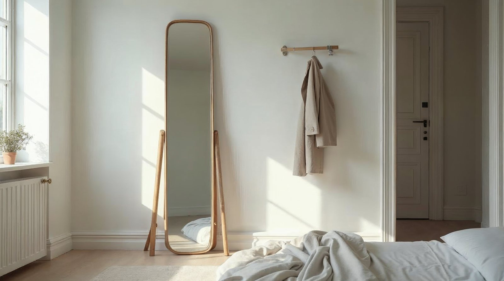
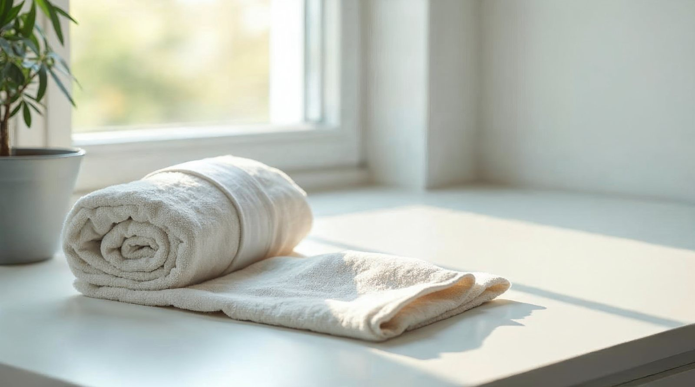
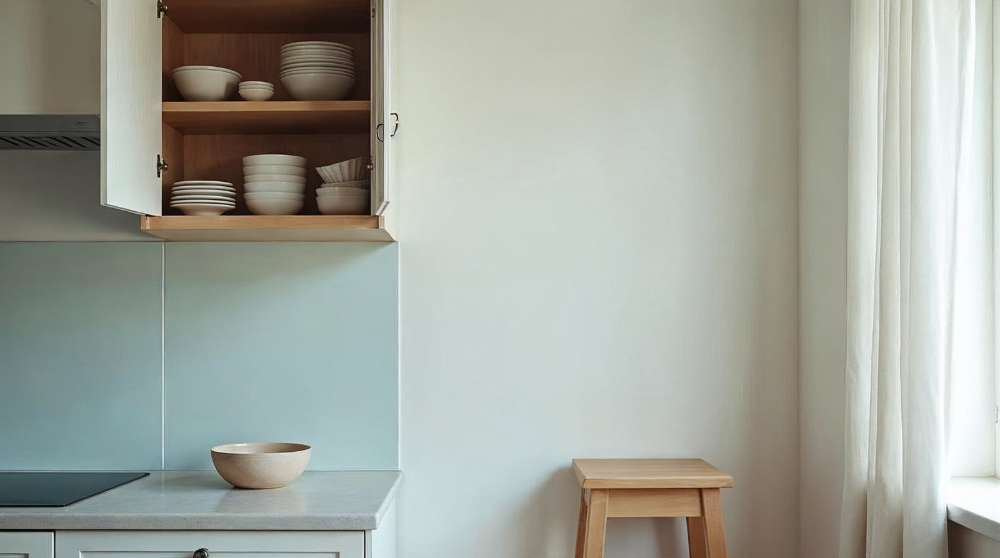
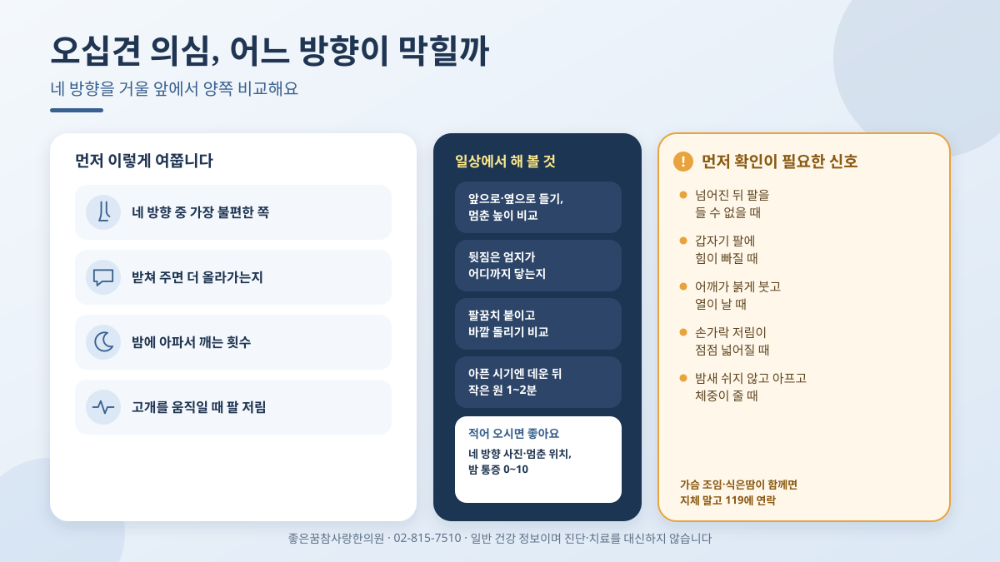

이종호 한의사 감수좋은꿈참사랑한의원 대표원장 (한의사 면허번호 19769)발행 2026-11-25 · 수정 2026-11-25
이 글의 차례
어깨가 아파 팔이 잘 안 올라가면 흔히 오십견부터 떠올리지만, 같은 '안 올라간다'도 어느 방향에서 막히는지에 따라 살펴볼 것이 달라집니다. 그래서 진료실에서 가장 먼저 확인하는 것도 앞으로 들기, 옆으로 들기, 뒤로 돌리기(뒷짐), 바깥으로 돌리기 네 방향의 움직임입니다.
집에서도 거울 앞에 서서 아프지 않은 쪽과 나란히 비교해 보면 어느 방향이 얼마나 막히는지, 스스로 올릴 때와 다른 손으로 받쳐 올릴 때가 다른지를 꽤 구체적으로 적어 올 수 있습니다. 이 방법은 오십견인지 아닌지를 스스로 판정하려는 것이 아니라 진료에서 확인할 단서를 모으는 과정입니다.
넘어진 뒤 팔을 갑자기 들 수 없게 됐거나 팔에 힘이 빠진다면 거울 앞에서 살펴보기보다 진료를 먼저 받으셔야 합니다.
왜 어느 방향이 막히는지가 중요할까요
- 흔히 오십견이라 부르는 모습은 어깨 관절을 감싼 주머니(관절막)가 염증으로 두꺼워지고 줄어들면서 생기는 경우가 많습니다. 관절막 전체가 함께 굳기 때문에 한 방향만이 아니라 여러 방향이 같이 막히고, 스스로 올릴 때뿐 아니라 다른 사람이 받쳐 올려 줘도 비슷한 높이에서 걸리는 것이 특징으로 알려져 있습니다.
- 그중에서도 팔꿈치를 옆구리에 붙이고 손을 바깥으로 돌리는 동작이 이른 시기부터 많이 줄어드는 경우가 흔하고, 이어서 옆으로 들기와 뒷짐 지기가 어려워지는 모습을 보이는 경우가 많습니다. 앞으로 들기는 비교적 늦게까지 어느 정도 남아 있기도 합니다.
- 어깨 위쪽을 덮고 있는 힘줄(회전근개)에 문제가 있을 때는 스스로 들 때는 아프거나 힘이 없어 못 올리지만, 다른 손이나 다른 사람이 받쳐 주면 끝까지 올라가는 경우가 많습니다. 옆으로 들 때 중간 높이, 대략 어깨 높이 전후에서만 아프고 그 구간을 지나면 오히려 덜 아픈 모습도 힘줄과 그 주변 주머니(점액낭) 쪽 단서로 봅니다.
- 목에서 내려오는 통증은 어깨를 움직이는 범위는 비교적 남아 있는데, 고개를 젖히거나 아픈 쪽으로 돌릴 때 어깨와 팔이 더 아프거나 저린 경우가 많습니다. 통증이 팔꿈치 아래 손가락까지 내려가거나 손끝 감각이 둔한 느낌이 함께 있으면 목 쪽을 함께 살펴봐야 합니다.
- 이 밖에도 힘줄에 석회가 생긴 경우, 어깨 끝 관절에 무리가 간 경우처럼 비슷하게 아픈 경우가 여럿 있습니다. 그래서 방향별 기록은 진단을 대신하는 것이 아니라 진료에서 무엇부터 확인할지 정하는 데 쓰입니다.
- 당뇨나 갑상선 질환이 있는 분, 다른 부위를 다치거나 수술한 뒤 팔을 한동안 덜 쓴 분에게 어깨가 굳는 모습이 더 잘 나타나는 것으로 알려져 있습니다.
- 한의학에서는 어깨가 굳고 밤에 더 아픈 모습을 기운과 혈이 잘 돌지 못하고 찬 기운에 더 움츠러드는 모습과 함께 살피기도 합니다. 그래서 어깨만이 아니라 잠, 피로, 손발이 찬 정도도 함께 여쭙니다.
자주 하는 오해
- "팔이 안 올라가면 다 오십견"이라고 여기기 쉽지만, 힘줄 문제나 목에서 오는 통증도 팔을 들기 어렵게 만들 수 있습니다. 어느 방향에서, 어떤 방식으로 막히는지가 구분의 첫 단서입니다.
- 거울 앞에서 살펴본 결과만으로 오십견인지 아닌지 정할 수 있다고 생각하기도 합니다. 집에서의 관찰은 단서일 뿐이고, 실제 확인은 진찰과 필요한 검사를 거쳐야 합니다.
- 아픈 방향을 매일 세게 밀어붙여야 빨리 풀린다고 여기기도 합니다. 통증이 심한 시기에 억지로 꺾으면 염증이 더 예민해질 수 있어 시기에 맞춰 세기를 정해야 합니다.
- 반대로 아프니까 아예 쓰지 않는 편이 좋다고 생각하는 분도 있습니다. 아프지 않은 범위의 움직임까지 멈추면 굳는 범위가 더 넓어질 수 있습니다.
상황별 예시
- 예를 들어 50대 직장인이 출근길 지하철에서 손잡이를 잡으려다 팔이 어깨 높이에서 멈추고, 셔츠를 입을 때 아픈 팔을 소매에 먼저 넣어야 하는 경우입니다. 거울 앞에서 보면 앞으로 들기보다 옆으로 들기와 바깥으로 돌리기에서 아픈 쪽이 훨씬 일찍 멈추고, 다른 손으로 받쳐 올려도 같은 높이에서 걸린다면 관절막이 굳어 가는 쪽 단서로 보고 진료에서 확인합니다.
- 예를 들어 40대가 헬스장에서 어깨 운동을 한 뒤부터 팔을 옆으로 들 때 중간 높이에서만 찌릿하고, 그 구간을 넘기면 오히려 덜 아픈 경우입니다. 다른 손으로 받쳐 주면 끝까지 올라간다면 힘줄과 그 주변을 먼저 살펴볼 단서가 되며, 진료에서 초음파로 힘줄 주변을 함께 보는 경우가 많습니다.
- 예를 들어 하루 종일 모니터를 보는 사무직이 고개를 뒤로 젖히거나 아픈 쪽으로 돌릴 때 어깨 위쪽부터 팔 바깥, 손가락까지 저리고, 정작 팔을 들어 올리는 범위는 반대쪽과 비슷한 경우입니다. 이때는 어깨보다 목에서 내려오는 신경 쪽을 함께 살펴야 할 수 있습니다.
- 예를 들어 당뇨가 있는 60대 어르신이 몇 달 사이 뒷짐을 지기 어려워져 등 뒤로 손이 허리띠 높이까지만 가고, 밤에 아픈 쪽으로 돌아누우면 깨는 경우입니다. 반대쪽 어깨도 조금씩 뻣뻣해지는 느낌이 있다면 양쪽을 모두 기록하고, 다니시는 내과의 혈당 관리도 이어 가시도록 함께 이야기합니다.

먼저 이렇게 여쭙니다
- 앞으로, 옆으로, 등 뒤로, 바깥으로 돌리는 네 방향 중 어느 쪽이 가장 불편한지 여쭙니다.
- 스스로 올릴 때와 다른 손이나 가족이 받쳐 줄 때 올라가는 높이가 다른지 여쭙니다.
- 언제부터 시작됐는지, 그 전에 넘어지거나 무거운 것을 들거나 팔을 오래 쓰지 못한 일이 있었는지 여쭙니다.
- 밤에 가만히 있어도 아픈지, 아픈 쪽으로 누우면 깨는지, 하룻밤에 몇 번 깨는지 여쭙니다.
- 고개를 돌리거나 젖힐 때 어깨나 팔이 더 아프거나 손가락 쪽으로 저림이 내려가는지 여쭙니다.
- 팔에 힘이 빠져 물건을 놓치거나 팔을 든 채로 버티기 어려운지 여쭙니다.
- 당뇨나 갑상선 질환, 복용 중인 약, 요즘 잠과 피로는 어떤지 함께 여쭙니다.
거울 앞에서 네 방향을 살펴보는 방법
준비는 간단합니다. 상체가 다 보이는 거울 앞에 서서 두꺼운 옷은 벗고 얇은 티셔츠 차림으로 어깨선이 보이게 합니다. 아프지 않은 쪽 팔부터 먼저 움직여 기준을 보고, 그다음 아픈 쪽을 같은 속도로 움직입니다. 방향마다 천천히 세 번 정도만 하고, 통증이 날카롭게 올라오는 지점에서 멈춥니다. 휴대폰으로 정면과 옆모습을 찍어 두면 다음에 비교하기 쉽습니다.
앞으로 들기
- 팔꿈치를 편 채 엄지가 위를 향하게 하고, 두 팔을 몸 앞으로 천천히 들어 올립니다.
- 손이 어깨 높이, 눈높이, 머리 위 중 어디에서 멈추는지, 아픈 쪽이 반대쪽보다 얼마나 낮은지 봅니다.
- 올리는 동안 아픈 쪽 어깨가 귀 쪽으로 같이 솟아오르거나 허리가 뒤로 젖혀진다면, 어깨 관절 대신 날개뼈와 허리가 움직임을 대신 채우고 있다는 뜻일 수 있습니다.
옆으로 들기
- 손바닥을 앞으로 향하게 하고 두 팔을 몸 옆으로 벌려 머리 위까지 올려 봅니다.
- 어느 높이에서 멈추는지와 함께, 중간 구간에서만 아프고 그 위로는 덜 아픈지, 처음부터 끝까지 뻣뻣하게 막히는지를 나누어 적습니다.
- 거울 속 양쪽 어깨 높이를 비교해 아픈 쪽 어깨가 일찍 솟아오르는지도 봅니다.
뒤로 돌리기(뒷짐)
- 아픈 쪽 손등을 허리 뒤에 대고 엄지를 등 가운데로 천천히 올려 봅니다.
- 엄지가 엉덩이, 허리띠, 허리띠 위 한 뼘, 날개뼈 아래 중 어디까지 가는지 반대쪽과 비교합니다. 뒷주머니, 허리띠, 속옷 끈 높이처럼 옷에 있는 기준으로 적으면 다음에도 같은 기준으로 볼 수 있습니다.
바깥으로 돌리기
- 팔꿈치를 옆구리에 붙이고 직각으로 굽혀 손바닥이 마주 보게 한 뒤, 팔꿈치는 떨어지지 않게 한 채 손을 바깥으로 문을 열듯 벌립니다.
- 반대쪽보다 손이 얼마나 덜 벌어지는지 봅니다. 굳어 가는 어깨에서는 이 방향이 이른 시기부터 많이 줄어드는 경우가 흔합니다.
받쳐서 다시 들어 보기
- 스스로 올려 본 뒤, 반대쪽 손으로 아픈 팔 손목을 잡고 받쳐서 앞으로 들어 올리거나 가족에게 천천히 들어 달라고 부탁합니다.
- 받쳐 줘도 같은 높이에서 단단히 막히는지, 받쳐 주면 훨씬 더 올라가는지를 적어 둡니다. 억지로 밀어 올리지는 않습니다.
고개도 함께 움직여 보기
- 고개를 천천히 좌우로 돌리고, 뒤로 젖히고, 귀를 어깨 쪽으로 기울여 봅니다.
- 이때 어깨나 팔 통증이 더 심해지거나 팔 아래쪽, 손가락까지 저림이 내려가는지 봅니다. 저림이 뚜렷하면 목 쪽을 함께 확인해야 할 단서가 됩니다.
스스로 점검해 보세요
- 네 방향 중 두 방향 이상에서 아픈 쪽이 반대쪽보다 분명히 덜 올라간다.
- 다른 손으로 받쳐 올려도 비슷한 높이에서 막힌다.
- 바깥으로 돌리기가 반대쪽보다 특히 많이 줄었다.
- 옆으로 들 때 중간 구간에서만 아프고, 받쳐 주면 끝까지 올라간다.
- 고개를 젖히거나 돌리면 팔이나 손가락까지 저림이 내려간다.
- 팔을 든 채로 버티기 어렵거나 물건을 자주 놓친다.
- 밤에 아픈 쪽으로 누우면 깨고, 가만히 있어도 욱신거린다.
- 몇 주 사이 같은 방향의 높이가 점점 줄었다.
위 항목은 진단 기준이 아니라 진료에서 함께 볼 단서입니다. 체크한 항목과 사진을 그대로 가져오시면 상담이 훨씬 구체적이 됩니다.
밤에 아픈 정도도 함께 살펴보세요
- 어깨가 굳어 가는 시기에는 낮보다 밤에 더 아프다는 분이 많습니다. 누우면 낮 동안 어깨를 받쳐 주던 근육의 긴장이 풀리고, 아픈 쪽이 눌리거나 팔이 뒤로 처지면서 통증이 더 예민하게 느껴질 수 있습니다.
- 밤 통증은 0에서 10 사이 숫자로 적고, 잠든 뒤 몇 번 깨는지, 아픈 쪽으로 누울 수 있는지, 아침에 일어났을 때 어깨가 얼마나 뻣뻣한지를 함께 적습니다.
- 반듯이 누울 때는 아픈 팔의 팔꿈치부터 손목까지 얇은 베개나 접은 수건을 받쳐 팔이 뒤로 처지지 않게 합니다. 옆으로 누울 때는 아프지 않은 쪽으로 누워 아픈 팔을 베개 하나를 끌어안듯 올려 두면 편한 경우가 많습니다.
- 자세를 바꿔도 밤새 쉬지 않고 아프거나, 열이 나거나, 체중이 빠지는 일이 함께 있다면 어깨만의 문제가 아닐 수 있어 먼저 확인합니다.

일상에서 먼저 해 볼 수 있는 것
흔히 오십견은 통증이 심해지며 굳어 가는 시기, 통증은 줄었지만 굳어 있는 시기, 조금씩 풀려 가는 시기로 나누어 설명합니다. 시기마다 걸리는 기간은 사람마다 다르고, 전체가 몇 달에서 길게는 한두 해에 걸치기도 하는 것으로 알려져 있습니다. 지금 어느 시기에 가까운지는 진료에서 함께 판단하되, 아래처럼 시기에 따라 세기를 달리하는 것이 기본입니다.
굳어 가는 시기(통증이 심하고 밤에 자주 깰 때)
- 아침에 일어나 바로 팔을 쓰지 말고, 따뜻한 물수건이나 찜질팩으로 어깨를 10~15분 데운 뒤 움직이기 시작합니다.
- 허리를 숙이고 아프지 않은 손으로 탁자를 짚은 채, 아픈 팔은 힘을 빼고 늘어뜨려 작은 원을 그리듯 1~2분 흔듭니다. 아침과 저녁 하루 두 번이면 충분합니다.
- 일상에서는 팔을 어깨 높이 아래에서 쓰는 일 위주로 하고, 높은 선반의 물건이나 뒷좌석의 가방을 갑자기 집는 동작은 피합니다.
- 움직인 뒤 생긴 통증이 30분에서 1시간 안에 가라앉으면 견딜 만한 세기, 다음 날까지 더 아프면 세기를 줄이라는 신호로 봅니다.
굳은 시기(통증은 줄었지만 높이가 그대로일 때)
- 샤워나 찜질로 어깨를 데운 직후 하루 두세 번, 방향마다 5~10회씩 천천히 늘립니다. 끝에서 10~20초 머물고 반동을 주지 않습니다.
- 앞으로 들기는 벽을 마주 보고 서서 손가락으로 벽을 걸어 올라가듯 올리고, 닿은 높이에 작은 스티커를 붙여 둡니다.
- 뒷짐은 수건 양 끝을 위아래 손으로 나눠 잡고, 위쪽 손으로 수건을 살짝 당겨 아픈 쪽 손이 등 위로 조금씩 올라가게 합니다.
- 바깥으로 돌리기는 팔꿈치를 옆구리에 붙이고 우산이나 막대를 양손으로 잡은 뒤, 아프지 않은 손으로 막대를 밀어 아픈 손이 바깥으로 벌어지게 합니다.
- 옆으로 들기는 탁자 옆에 앉아 아픈 팔을 탁자 위에 올리고, 몸을 천천히 낮추며 팔이 옆으로 미끄러지듯 나가게 합니다.
풀리는 시기(조금씩 높이가 늘어날 때)
- 늘어난 범위를 일상 동작에서 자주 써 봅니다. 머리 감기, 선반에 물건 올리기, 뒷주머니에 손 넣기처럼 막혔던 동작을 하루 몇 번씩 일부러 해 봅니다.
- 통증이 거의 없다면 가벼운 고무 밴드로 바깥 돌리기, 팔 앞으로 밀기 같은 힘 쓰기를 열 번씩 시작하고, 세기를 올리는 것은 천천히 합니다.
- 이 시기에도 일주일에 한 번 같은 거울, 같은 옷차림으로 네 방향을 다시 찍어 변화를 비교합니다.
시기와 상관없이
- 찬 바람이 어깨에 바로 닿지 않게 목도리나 얇은 조끼로 덮습니다. 추위에 몸이 움츠러들면 어깨가 더 굳게 느껴지기 쉽습니다.
- 컴퓨터 작업 중에는 50분마다 일어나 어깨를 천천히 돌리고 숨을 크게 쉬어 줍니다.
- 한쪽 팔을 아끼느라 반대쪽 어깨와 목에 일이 몰리지 않는지도 살핍니다. 아프지 않은 쪽까지 뻐근해지면 함께 기록해 둡니다.

한의원에서 함께 살필 수 있는 경우
- 네 방향 중 어디서 막히는지 스스로 구분하기 어렵고, 진료에서 함께 확인하고 싶은 경우
- 밤 통증 때문에 잠이 자주 끊기고 낮에도 지치는 경우
- 어깨와 함께 목, 날개뼈 주변이 늘 뻐근하고 고개를 돌리기 불편한 경우
- 시기에 맞는 움직임의 세기와 순서를 정해 두고 싶은 경우
좋은꿈참사랑한의원에서는 첫 방문 때 언제부터 어느 방향이 불편해졌는지, 다치거나 팔을 오래 쓰지 못한 일은 없었는지, 밤에 몇 번 깨는지를 먼저 여쭙고 맥부터 짚어 봅니다. 진맥으로 잠과 피로, 몸이 찬 정도처럼 몸 전체의 리듬을 살핀 뒤 앞으로, 옆으로, 등 뒤로, 바깥으로 네 방향을 스스로 올릴 때와 받쳐 올릴 때로 나누어 양쪽을 비교합니다.
고개를 움직여 팔로 내려가는 저림이 있는지, 팔에 힘이 고르게 들어가는지도 확인하고, 어깨와 날개뼈, 목 주변을 눌러 예민한 자리를 찾습니다.
필요하다고 판단되면 초음파로 어깨 힘줄과 그 주변을 양쪽 비교해 살펴봅니다. 초음파로 모든 것을 알 수 있는 것은 아니어서, 뼈나 관절 안쪽을 더 봐야 하거나 목 신경 쪽 확인이 먼저라고 판단되면 X선이나 MRI 같은 검사가 가능한 의료기관을 안내합니다.
그 뒤 시기와 몸 상태에 맞춰 침, 온열 치료, 추나 등을 신중하게 정하고, 체외충격파는 부위와 상태를 확인한 뒤 필요하다고 판단될 때만 씁니다. 다음 진료에서는 지난번 기록한 네 방향의 높이와 밤에 깬 횟수부터 이어서 여쭙습니다.
얼마나 지켜보고 언제 상담할까요
- 시기에 맞는 움직임을 2~3주 이어 가며, 일주일에 한 번 네 방향 사진과 밤에 깬 횟수를 비교해 봅니다.
- 2~3주가 지나도 한 방향 이상에서 높이가 계속 줄거나, 밤 통증으로 잠을 거의 이루지 못한다면 진찰을 받아 보시길 권합니다.
- 받쳐 주면 올라가는데 스스로는 들지 못하는 상태가 이어지거나 팔에 힘이 빠지는 느낌이 있다면, 지켜보는 기간을 길게 두지 말고 확인합니다.
- 넘어지거나 무거운 것을 들다가 '뚝' 하는 느낌과 함께 팔을 들 수 없게 됐다면 지켜보지 말고 바로 진료를 받습니다.
이렇게 기록해 오시면 상담이 쉬워집니다
- 거울 앞에서 찍은 네 방향 사진(정면·옆모습)과 찍은 날짜
- 방향별로 멈춘 위치(어깨 높이·눈높이·머리 위, 뒷주머니·허리띠·속옷 끈 높이 등)
- 스스로 올릴 때와 받쳐 올릴 때의 차이
- 밤 통증 0~10, 하룻밤 깬 횟수, 아픈 쪽으로 누울 수 있는지
- 고개를 움직일 때 팔이나 손가락으로 내려가는 저림이 있는지
- 당뇨·갑상선 질환 여부, 복용 중인 약, 이전 검사 결과지
이런 증상은 먼저 확인이 필요합니다
- 넘어지거나 부딪힌 뒤 팔을 들 수 없거나 어깨 모양이 달라 보이는 경우
- 갑자기 팔에 힘이 빠지거나 물건을 자꾸 떨어뜨리는 경우
이런 신호가 있으면 한의원보다 가까운 병원이나 응급실을 먼저 찾으세요.
관련 글
- 팔이 올라가지 않고 어깨가 굳어 갈 때(오십견)는 일상에서 무엇을 살피나요?
- 어깨가 아플 때 초음파로 무엇을 확인하고, 어떤 동작을 먼저 묻나요?
- 목에서 팔로 저림이 내려올 때(목디스크 의심)는 어떤 점을 먼저 확인하나요?

여쭙는 것
- 앞으로, 옆으로, 등 뒤로, 바깥으로 돌리는 네 방향 중 어느 쪽이 가장 불편한지…
- 스스로 올릴 때와 다른 손이나 가족이 받쳐 줄 때 올라가는 높이가 다른지 여쭙니다.
- 언제부터 시작됐는지, 그 전에 넘어지거나 무거운 것을 들거나 팔을 오래 쓰지 못한…
생활에서 해 볼 것
- 아침에 일어나 바로 팔을 쓰지 말고, 따뜻한 물수건이나 찜질팩으로 어깨를 10~15…
- 허리를 숙이고 아프지 않은 손으로 탁자를 짚은 채, 아픈 팔은 힘을 빼고 늘어뜨려…
- 일상에서는 팔을 어깨 높이 아래에서 쓰는 일 위주로 하고, 높은 선반의 물건이나 뒷…
한의원에서 함께 살필 것
- 네 방향 중 어디서 막히는지 스스로 구분하기 어렵고, 진료에서 함께 확인하고 싶은 경우
- 밤 통증 때문에 잠이 자주 끊기고 낮에도 지치는 경우
- 어깨와 함께 목, 날개뼈 주변이 늘 뻐근하고 고개를 돌리기 불편한 경우
먼저 확인이 필요한 신호
- 넘어지거나 부딪힌 뒤 팔을 들 수 없거나 어깨 모양이 달라 보이는 경우
- 갑자기 팔에 힘이 빠지거나 물건을 자꾸 떨어뜨리는 경우
한눈에 보는 표
| 구분 | 핵심 |
|---|---|
| 여쭙는 것 | 앞으로, 옆으로, 등 뒤로, 바깥으로 돌리는 네 방향 중 어느 쪽이 가장 불편한지 여쭙니다. 스스로 올릴 때와 다른 손이나 가족이 받쳐 줄 때 올라가는 높이가 다른지 여쭙니다. |
| 생활에서 해 볼 것 | 아침에 일어나 바로 팔을 쓰지 말고, 따뜻한 물수건이나 찜질팩으로 어깨를 10~15분 데운 뒤 움직이기 시작합니다. 허리를 숙이고 아프지 않은 손으로 탁자를 짚은 채, 아픈 팔은 힘을 빼고 늘어뜨려 작은 원을 그리듯 1~2분 흔듭니다. 아침과 저녁 하루 두 번이면 충분합니다. |
| 한의원에서 함께 살필 것 | 네 방향 중 어디서 막히는지 스스로 구분하기 어렵고, 진료에서 함께 확인하고 싶은 경우 밤 통증 때문에 잠이 자주 끊기고 낮에도 지치는 경우 |
| 먼저 확인이 필요한 신호 | 넘어지거나 부딪힌 뒤 팔을 들 수 없거나 어깨 모양이 달라 보이는 경우 갑자기 팔에 힘이 빠지거나 물건을 자꾸 떨어뜨리는 경우 |
자주 묻는 질문
거울 앞에서 살펴보면 오십견인지 알 수 있나요?
집에서의 관찰은 어느 방향이 얼마나 막히는지 기록하는 단서입니다. 힘줄 문제나 목에서 오는 통증도 비슷하게 느껴질 수 있어, 오십견인지는 진찰과 필요한 검사로 확인합니다.
받쳐 주면 팔이 올라가는데 그래도 오십견일 수 있나요?
받쳐 주면 훨씬 더 올라간다면 관절이 굳었다기보다 힘줄이나 그 주변이 아파 스스로 못 올리는 경우를 함께 생각해 볼 수 있습니다. 다만 집에서 단정하기는 어려워 진료에서 양쪽을 비교해 확인합니다.
어느 방향이 먼저 굳나요?
흔히 팔꿈치를 옆구리에 붙이고 손을 바깥으로 돌리는 동작이 이른 시기부터 줄어드는 경우가 많고, 옆으로 들기와 뒷짐이 뒤따르는 경우가 많습니다. 순서와 정도는 사람마다 다를 수 있습니다.
아파도 매일 끝까지 늘려야 하나요?
통증이 심한 굳어 가는 시기에는 억지로 끝까지 늘리지 않고 아프지 않은 범위에서 가볍게 움직입니다. 움직인 뒤 통증이 한 시간 안에 가라앉는 정도를 기준으로 세기를 정하고, 굳은 시기부터 조금씩 늘려 갑니다.
초음파로는 무엇을 보나요?
필요하다고 판단될 때 어깨 힘줄과 그 주변을 양쪽 비교해 살펴봅니다. 초음파만으로 모든 것을 알 수는 없어서, 더 자세한 영상 검사가 필요하면 검사가 가능한 의료기관을 안내합니다.
좋은꿈참사랑한의원은 재진 때 지난번 이야기부터 이어서 여쭙니다. 진료시간과 예약은 오시는 길에서 확인하세요.
어디서 상담받을 수 있나요?
좋은꿈참사랑한의원은 서울 동작구 만양로2길 2 신성빌딩 3층·5층(서울 동작구 상도동, 7호선 상도역 3번 출구 근처)에 있습니다. 한의사 3명(이종호 대표원장, 조영기 수석진료원장, 정원영 진료원장)이 진료합니다. 진료시간은 평일 09:30~20:00(점심 13:00~14:00), 토·일·공휴일 09:30~15:00이며, 방문 전 전화로 확인을 권합니다. 예약은 네이버 예약, 카카오톡 상담, 전화 02-815-7510로 받습니다.
이 글은 일반적인 건강 정보이며 개인의 진단이나 치료를 대신하지 않습니다. 증상이 있거나 복용 중인 약이 있다면 진료를 통해 확인하세요. 치료 효과는 개인마다 다를 수 있습니다.
작성 기준: 일반적으로 알려져 있는 건강 정보를 참고해 정리했습니다(대표원장 감수). 증상 기록은 1~2주 동안 하루 1회, 비슷한 시간에 적어 오시면 지난 상태와 비교하기 쉽습니다.